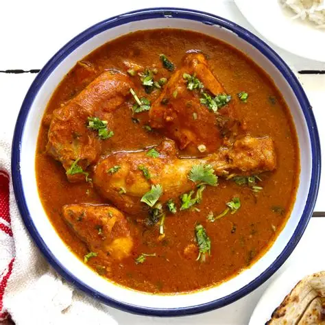

Chicken curry

Description
Chicken curry is a popular dish made with chicken cooked in a sauce containing onions, tomatoes, spices and curry powder. It is usually served with rice or pap.
The chicken absorbs the spices while cooking, creating a delicious and warming meal.
Ingredients
- 500g chicken pieces
- 1 onion
- 2 tomatoes
- 2 tablespoons cooking oil
- 2 tablespoons curry powder
- 1 teaspoon garlic
- 1 teaspoon ginger
- 2 potatoes
- 1 cup water
- Salt
- pepper
Steps
- Prepare the ingredients: Chop the onion and tomatoes into small pieces. Peel and cut the potatoes into cubes.
- Heat the oil: Add cooking oil to a pot and heat over medium heat.
- Cook the onions: Add the chopped onion and fry until soft.
- Add garlic and ginger: Stir in the garlic and ginger.
- Add curry powder: Add the curry powder and stir for about a minute.
- Add the tomatoes: Cook until the tomatoes become soft and form a sauce.
- Add the chicken: Place the chicken pieces into the pot and stir until coated with the spices.
- Add potatoes and water: Add the potatoes and water, then season with salt and pepper.
- Cook the curry: Cover the pot and simmer for approximately 30–40 minutes, until the chicken is fully cooked and the potatoes are soft.
- Serve with rice or pap
Home